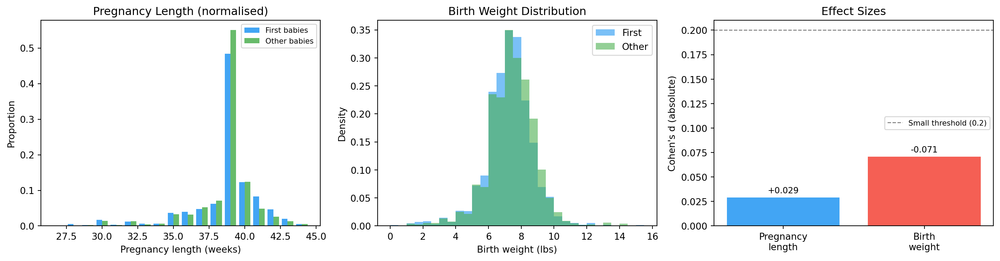

“First babies are born 13 hours later on average. Is that a big difference?”
Chapter 1 gave us a number. But a number without context is meaningless.
13 hours sounds large. But if pregnancy length varies by weeks between women, 13 hours might be invisible. To judge whether a difference is large, we need to understand the shape of the data — the distribution.
15.2 What is a distribution?
A distribution tells you two things about a variable:
What values are possible?
How often does each value appear?
The simplest way to represent a distribution is a histogram.
15.3 Histograms
A histogram divides the range of values into bins and counts how many observations fall in each bin.
Bin [38, 39): ████████████████ 1,243 pregnancies
Bin [39, 40): ██████████████ 1,089 pregnancies
Bin [40, 41): ████████ 612 pregnancies
Binning choices matter. Too few bins → you lose shape. Too many bins → noise looks like signal. This is a judgment call — always try multiple bin widths.
15.3.1 The frequency trap
If you plot raw counts and your two groups have different sizes, the taller bar is always the bigger group — not necessarily the more common value. Always normalize before comparing:
\text{proportion} \;=\; \frac{\text{count in bin}}{\text{total count}}
15.4 Setup — reuse the cleaned NSFG data
import sysimport osimport numpy as npimport matplotlib.pyplot as plt# `_nsfg.py` lives next to this chapter.sys.path.insert(0, os.path.dirname(os.path.abspath("__file__")) or".")from _nsfg import load_groups, COLORSlive, first, other = load_groups()print(f"Live: {len(live):,} First: {len(first):,} Other: {len(other):,}")
Live: 9,148 First: 4,413 Other: 4,735
15.5 Building a histogram from scratch
We do this manually first, so you see what np.histogram does internally.
def make_histogram(values: np.ndarray, bins: np.ndarray) ->dict[float, int]:"""Count how many values fall in each bin. Returns {bin_left_edge: count}.""" counts: dict[float, int] = {b: 0for b in bins[:-1]}for value in values:if np.isnan(value):continuefor i inrange(len(bins) -1):if bins[i] <= value < bins[i +1]: counts[bins[i]] +=1breakreturn countsdef normalize_histogram(hist: dict[float, int]) ->dict[float, float]:"""Convert counts to proportions so groups of different sizes are comparable.""" total =sum(hist.values())return {k: v / total for k, v in hist.items()}prglngth_bins = np.arange(27, 46, 1) # 27, 28, ..., 45 weeksfirst_hist = make_histogram(first["prglngth"].values, prglngth_bins)other_hist = make_histogram(other["prglngth"].values, prglngth_bins)first_norm = normalize_histogram(first_hist)other_norm = normalize_histogram(other_hist)print(f"{'Weeks':>6}{'First':>8}{'Other':>8}{'Diff':>8}")for week insorted(first_norm): f = first_norm.get(week, 0) o = other_norm.get(week, 0)print(f" {week:>4.0f}{f:>7.4f}{o:>7.4f}{f-o:>+7.4f}")
The two columns are nearly identical at every week. The biggest difference is at week 39, and even there it’s a fraction of a percentage point.
15.6 Outliers
Every real dataset has outliers — values far from the rest.
In NSFG prglngth you’ll see values of 0 weeks (unclear what this means) and values above 45 weeks (rare but possible). Before any analysis, you must decide what to do with them:
Remove them — if they represent data errors.
Keep them — if they represent genuine rare events.
Flag them — compute results with and without, report both.
For pregnancy length we restrict to 27–44 weeks for live births. Shorter than 27 weeks is extreme prematurity (rare, different medical category). Longer than 44 weeks is likely a recording error.
15.7 Summarising a distribution
Sometimes you want a single number instead of a plot. The most common summaries:
15.7.1 Mean
\bar{x} \;=\; \frac{1}{n} \sum_{i=1}^{n} x_i
Sensitive to outliers. One very large value pulls the mean far from the centre.
The average squared deviation from the mean. Units are squared (weeks²).
15.7.3 Standard deviation
\sigma \;=\; \sqrt{\sigma^2}
Same units as the data. A typical pregnancy deviates from the mean by \sigma weeks.
Note▶ Why ddof=1 for samples and ddof=0 for populations
When you compute variance from a sample and want to estimate the population variance, dividing by n underestimates the true variance — because the sample mean \bar{x} is itself the value that minimises \sum (x_i - \bar{x})^2. Bessel’s correction divides by n - 1 instead, restoring an unbiased estimator. The argument ddof=1 (delta degrees of freedom) tells numpy and our helpers to do this.
def mean(values: np.ndarray) ->float: v = values[~np.isnan(values)]return v.sum() /len(v)def variance(values: np.ndarray, ddof: int=0) ->float: v = values[~np.isnan(values)] m = mean(v)return np.sum((v - m) **2) / (len(v) - ddof)def std(values: np.ndarray, ddof: int=0) ->float:return np.sqrt(variance(values, ddof))first_prg = first["prglngth"].valuesother_prg = other["prglngth"].valuesprint(f" First babies Other babies")print(f" n : {len(first_prg):>12,}{len(other_prg):>12,}")print(f" Mean (weeks) : {mean(first_prg):>12.3f}{mean(other_prg):>12.3f}")print(f" Variance : {variance(first_prg):>12.3f}{variance(other_prg):>12.3f}")print(f" Std dev : {std(first_prg):>12.3f}{std(other_prg):>12.3f}")
First babies Other babies
n : 4,413 4,735
Mean (weeks) : 38.601 38.523
Variance : 7.793 6.841
Std dev : 2.792 2.616
The two groups have nearly identical spread (~2.7 weeks). The 0.078-week gap in their means is about 3 % of one standard deviation — vanishingly small relative to natural variation.
15.8 Effect size — Cohen’s d
The problem with raw differences: “0.078 weeks” sounds small. But how small? Is it 1 % of the typical variation or 50 %?
Cohen’s d measures the difference in means, normalised by the pooled standard deviation:
Cohen's d (pregnancy length) : +0.0289 (small)
Cohen's d (birth weight) : -0.0707 (small)
Two surprises:
The pregnancy-length effect is tiny — about 3 % of a standard deviation. The folk belief is technically true but practically negligible.
The birth-weight effect runs the opposite way: first babies are slightly lighter, not heavier. The “first babies are bigger” anecdote (which also exists) is also wrong.
15.9 Reporting results
When you report a statistical result, always report:
The effect size (not just whether it is “significant”).
The sample sizes (larger samples detect smaller effects).
The direction of the effect.
❌ Bad: “First babies are born later (p < 0.05).”
✅ Good: “First babies have a mean pregnancy length 0.078 weeks longer (Cohen’s d = 0.029, n₁ = 4,413, n₂ = 4,735), a statistically detectable but practically negligible difference.”
15.10 Visualising it
fig, axes = plt.subplots(1, 3, figsize=(15, 4))# 1. Pregnancy length, normalised, side-by-sideax = axes[0]weeks =sorted(first_norm.keys())width =0.4ax.bar([w -0.2for w in weeks], [first_norm[w] for w in weeks], width=width, color=COLORS["first"], alpha=0.85, label="First babies")ax.bar([w +0.2for w in weeks], [other_norm[w] for w in weeks], width=width, color=COLORS["other"], alpha=0.85, label="Other babies")ax.set_xlabel("Pregnancy length (weeks)")ax.set_ylabel("Proportion")ax.set_title("Pregnancy Length (normalised)")ax.legend(fontsize=8)# 2. Birth weight — note the bell shapeax = axes[1]wgt_bins = np.arange(0, 16, 0.5)ax.hist(first_wgt, bins=wgt_bins, density=True, alpha=0.6, color=COLORS["first"], label="First")ax.hist(other_wgt, bins=wgt_bins, density=True, alpha=0.6, color=COLORS["other"], label="Other")ax.set_xlabel("Birth weight (lbs)")ax.set_ylabel("Density")ax.set_title("Birth Weight Distribution")ax.legend()# 3. Effect sizesax = axes[2]effects = [d_prglngth, d_wgt]labels = ["Pregnancy\nlength", "Birth\nweight"]bar_colors = [COLORS["first"] if d >=0else COLORS["highlight"] for d in effects]bars = ax.bar(labels, [abs(d) for d in effects], color=bar_colors, alpha=0.85)ax.axhline(0.2, color="grey", linestyle="--", linewidth=1, label="Small threshold (0.2)")ax.set_ylabel("Cohen's d (absolute)")ax.set_title("Effect Sizes")ax.legend(fontsize=8)for bar, d inzip(bars, effects): ax.text(bar.get_x() + bar.get_width() /2, bar.get_height() +0.003,f"{d:+.3f}", ha="center", va="bottom", fontsize=9)plt.tight_layout()plt.show()

Normalised histograms and effect sizes for the first-baby question.
Look at the birth-weight histogram. It is roughly bell-shaped, symmetric, peaked near 7.4 lbs.
You’ve seen this shape before — or you’re about to.
15.11 The pivot — back to probability
The histogram raises a question:
“Is there a mathematical model that perfectly describes this shape? One with just two numbers — a mean and a spread — that captures everything?”
The answer is the Normal distribution. And the reason it appears everywhere is the Central Limit Theorem.
Both of these belong in the probability chapters that come next. Read them, then come back here — Chapter 3 picks up where we left off and uses the Normal/CLT machinery to ask harder questions about the same data.
15.12 Exercises
Compute mean, variance, and std for prglngth for first vs other babies — using the helpers above and using np.mean / np.var. Confirm they agree.
Compute Cohen’s d for pregnancy length. Is it small, medium, or large?
Plot histograms of totalwgt_lb for first vs other babies. What do you notice about the direction of the difference?
What fraction of pregnancies have prglngth < 37 weeks (premature)?
Compute Cohen’s d for birth weight. Compare it to the pregnancy-length effect.
15.13 Glossary
distribution — the set of possible values of a variable and the frequency of each.
histogram — a plot that counts how many values fall in each bin.
bin — an interval used to group values in a histogram.
normalisation — dividing counts by total to get proportions (removes group-size effects).
outlier — a value far from the rest of the data.
mean — sum of values divided by count; sensitive to outliers.
variance — average squared deviation from the mean.
standard deviation — square root of variance; same units as the data.
Cohen’s d — difference in means divided by pooled std; a unit-free effect-size measure.
effect size — how large a difference is, expressed in meaningful units.